Testing¶
See also
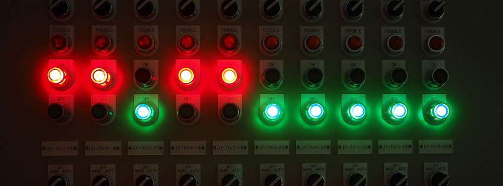
A key part of writing code is figuring out why it isn’t working and a key tool for debugging is testing. As code gets more complicated making sure that things stay in working order becomes both increasingly important and increasingly difficult to eyeball.
Part 1: Assertions¶
Python provides a builtin assert statement. Conceptually, the assert statement means, “the following must be true”. Or “if the following is not true raise an error.”
The assert statement is a simple statement that takes a boolean expression and an optional message to print if the assertion fails.
The most basic (albeit not terribly useful) assert statement is:
assert True
It is equivalent to:
1 2 | if not True:
raise AssertionError()
|
As long as the assertion passes, nothing happens. If it fails though, you’ll
see an AssertionError.
Here’s what it looks like when an assert statement fails.
assert False
---------------------------------------------------------------------------
AssertionError Traceback (most recent call last)
/tmp/ipykernel_2045/2103537015.py in <module>
----> 1 assert False
AssertionError:
And when an assert statement fails with a failure message.
assert False, "Silly, False is not True."
---------------------------------------------------------------------------
AssertionError Traceback (most recent call last)
/tmp/ipykernel_2045/442087246.py in <module>
----> 1 assert False, "Silly, False is not True."
AssertionError: Silly, False is not True.
Part 1.1 Examples¶
Like an if-statement or a while-loop, the first expression is
evaluated in a boolean context. You can use any expression that
returns True or False, such as comparison operators or even function
calls.
1 2 3 | assert 2 + 2 == 4
assert 3 < 10
assert "Python".startswith("P")
|
The boolean context also means that Truthiness and Falsiness apply.
1 2 3 4 5 6 | assert "hello", "a non-empty string is Truthy"
assert "", "an empty string is Falsy"
assert 100, "an non-zero number is Truthy"
assert 0, "zero is Falsy"
assert [1, 2, 3], "a non-empty string is Truthy"
assert [], "an empty list is Falsy"
|
Part 1.2: Exercise 1¶
Exercise 79 (Assertions)
In a IPython shell, see what happens when you assert the following.
An empty dictionary.
Your name lowercase is equal to your name capitalized.
Save a random number between
1and100to thenumvariable. Assert that it is less than 50. Have the assert message sayThe number: num should be less than 50. Repeat with different random numbers until you’ve gotten the assertion to pass and fail at least once each.
Solution to Exercise 79
>>> assert {}
---------------------------------------------------------------------------
AssertionError Traceback (most recent call last)
<ipython-input-16-226d154452a0> in <module>
----> 1 assert {}
AssertionError:
>>> assert "gaz" == "Gaz"
---------------------------------------------------------------------------
AssertionError Traceback (most recent call last)
<ipython-input-17-f9c022e29283> in <module>
----> 1 assert "gaz" == "Gaz"
AssertionError:
>>> import random
>>> num = random.randint(1, 100)
>>> assert num < 50, f"The number: {num} should be less than 50."
---------------------------------------------------------------------------
AssertionError Traceback (most recent call last)
<ipython-input-15-43237227605e> in <module>
1 num = random.randint(1, 100)
----> 2 assert num < 50, f"The number: {num} should be less than 50."
AssertionError: The number: 78 should be less than 50.
>>> num = random.randint(1, 100)
>>> assert num < 50, f"The number: {num} should be less than 50."
Part 2: Unit tests¶
While there are many kinds of tests, this lesson will primarily focus on unit tests. A unit tests is one that tests one part of our code–for our purposes a single function.
Part 2.1: A basic unit test¶
Say we have the following function.
1 2 3 4 5 6 7 | def greeting(name):
"""Return a welcome message string, including formatted name unless it's blank."""
name = name.strip().title()
if not name:
return "Welcome."
else:
return f"Welcome {name}."
|
Here’s a simple unit test for the function.
9 10 | def test_greeting():
assert greeting("buffy") == "Welcome Buffy.", 'should return "Welcome Buffy."'
|
Let’s break that down.
The assertion on line 10 has three parts.
It begins with the
assertkeyword.The expression
greeting("buffy") == "Welcome Buffy."is the heart of the test:It calls the
greeting()function with the argument"buffy".The return value is compared to the string
"Welcome Buffy"using the==operator which will evaluate to eitherTrueorFalse.The assertion will pass if this evaluates to
True. Otherwise, the assertion will fail.
The string
'should return "Welcome Buffy."'is a description of what is being tested. This will be shown in the event that the test fails.
Now we can run the test by calling the test function.
12 | test_greeting()
|
Part 2.2: Exercise 2¶
Exercise 80 (Unit Test)
1. Copy the following function into a script.
1 2 3 4 5 6 | def endgame(is_winner):
"""Return a string to tell the player if they won or lost."""
if is_winner:
return "Congratulations, you won!"
else:
return "You lost. Better luck next time!"
|
2. Write a test function to assert that when True is passed to the
endgame() function it should return "Congratulations, you won!".
3. Don’t forget to call the test function!
Solution to Exercise 80
1 2 3 4 5 6 7 8 9 10 11 | def endgame(is_winner):
"""Return a string to tell the player if they won or lost."""
if is_winner:
return "Congratulations, you won!"
else:
return "You lost. Better luck next time!"
def test_endgame():
assert endgame(True) == "Congratulations, you won!"
test_endgame()
|
Part 2.3: Testing more cases¶
As is often the case, the greeting() function may return different kinds of
results depending on its arguments. So we should be sure to test the
different behavior that we expect.
Hint
You can put the failure message on the next line by adding a \ at the end of the previous one.
9 10 11 12 13 14 15 16 17 18 19 20 21 22 23 | def test_greeting():
assert greeting("buffy") == "Welcome Buffy.", \
'should return "Welcome Buffy." with the lowercase name capitalized.'
assert greeting("XANDER") == "Welcome Xander.", \
'should return "Welcome Xander." with all caps name capitalized.'
assert greeting("SpongeBob SquarePants") == "Welcome Spongebob Squarepants.", \
'should return "Welcome Spongebob Squarepants." with all words capitalized.'
assert greeting("") == "Welcome.", \
'should return "Welcome." if name is blank.'
assert greeting(" ") == "Welcome.", \
'should return "Welcome." if name is only whitespace.'
|
Testing can also be a sort of documentation. For example, what would happen
if we pass a number to the greeting() function?
9 10 11 12 13 14 15 16 17 18 19 20 21 22 23 24 25 26 | def test_greeting():
assert greeting("buffy") == "Welcome Buffy.", \
'should return "Welcome Buffy." with the lowercase name capitalized.'
assert greeting("XANDER") == "Welcome Xander.", \
'should return "Welcome Xander." with all caps name capitalized.'
assert greeting("SpongeBob SquarePants") == "Welcome Spongebob Squarepants.", \
'should return "Welcome Spongebob Squarepants." with all words capitalized.'
assert greeting("") == "Welcome.", \
'should return "Welcome." if name is blank.'
assert greeting(" ") == "Welcome.", \
'should return "Welcome." if name just whitespace.'
assert greeting("42") == "Welcome 42.", \
'should return "Welcome 42." with no special handling for numbers.'
|
Part 2.4: Exercise 3¶
Exercise 81 (Detailed Unit Test)
1. Copy the following function into a script.
1 2 3 4 5 6 7 8 9 10 11 12 13 14 15 16 | def letter_grade(score):
"""Return the letter grade for a particular number score"""
ranges = {
(90, 100): "A",
(80, 89): "B",
(70, 79): "C",
(60, 69): "D",
(0, 59): "F",
}
for score_range, letter in ranges.items():
min_score, max_score = score_range
if score >= min_score and score <= max_score:
return letter
return False
|
2. Write a test function that includes assertions for each of the following arguments:
a score for that returns each of the letters
A,B,C,D, andFthat
110returns Falsethat
-5returns False
Solution to Exercise 81
1 2 3 4 5 6 7 8 9 10 11 12 13 14 15 16 17 18 19 20 21 22 23 24 25 26 27 | def letter_grade(score):
"""Return the letter grade for a particular number score"""
ranges = {
(90, 100): "A",
(80, 89): "B",
(70, 79): "C",
(60, 69): "D",
(0, 59): "F",
}
for score_range, letter in ranges.items():
min_score, max_score = score_range
if score >= min_score and score <= max_score:
return letter
return False
def test_letter_grade():
assert letter_grade(22) == "F", "number scores between 0-59 should return F"
assert letter_grade(61) == "D", "number scores between 60-69 should return D"
assert letter_grade(70) == "C", "number scores between 70-79 should return C"
assert letter_grade(89) == "B", "number scores between 80-89 should return B"
assert letter_grade(95) == "A", "number scores between 90-100 should return A"
assert not letter_grade(110), "number scores over 100 should return False"
assert not letter_grade(-5), "number scores under 0 should return False"
test_letter_grade()
|
Part 3: Pytest¶
While it’s easy to run tests by calling them from inside a script, it’s more common to use a test runner.
A test runner is a CLI tool that will run your tests and print a nicely formatted report of the results. Runners also often include a library that can be imported in your tests to provide tools and/or frameworks to aid in writing tests.
Part 3.1: Install pytest¶
For this lesson we’ll be using the pytest runner. It’s a Python module, so
you can install it as you normally do modules.
For poetry users:
poetry add --dev pytest
Otherwise:
python -m pip install pytest
Part 3.2: Migrate to Pytest¶
To use the runner part of pytest we only have to make a minor change to the
script to make it work with pytest. Simply put your main() call under a
if __name__ == "__main__" statement. This allows pytest to import your file
as a module without running the script by calling main().
We also no longer need to call the test_greeting() function in the script
itself, because pytest will handle that.
33 34 35 | if __name__ == "__main__":
# test_greeting()
main()
|
Now you can run the tests at the command line with the pytest command
followed by the filename.
pytest greeting.py
=================== test session starts ====================
platform darwin -- Python 3.8.1, pytest-6.2.1, py-1.10.0, ...
rootdir: ...
collected 1 item
greeting.py . [100%]
==================== 1 passed in 0.08s =====================
Let’s add a failing assertion so we can see what that looks like.
9 10 11 12 13 14 15 16 17 18 19 20 21 22 23 24 25 26 27 28 29 | def test_greeting():
assert greeting("buffy") == "", \
'demo of a test failure'
assert greeting("buffy") == "Welcome Buffy.", \
'should return "Welcome Buffy." with the lowercase name capitalized.'
assert greeting("XANDER") == "Welcome Xander.", \
'should return "Welcome Xander." with all caps name capitalized.'
assert greeting("SpongeBob SquarePants") == "Welcome Spongebob Squarepants.", \
'should return "Welcome Spongebob Squarepants." with all words capitalized.'
assert greeting("") == "Welcome.", \
'should return "Welcome." if name is blank.'
assert greeting(" ") == "Welcome.", \
'should return "Welcome." if name just whitespace.'
assert greeting("42") == "Welcome 42.", \
'should return "Welcome 42." no special handling for numbers.'
|
Now rerun the tests at the command line.
pytest greeting.py
=================== test session starts ====================
platform darwin -- Python 3.8.1, pytest-6.2.1, py-1.10.0, ...
rootdir: ...
collected 1 item
greeting.py F [100%]
========================= FAILURES =========================
______________________ test_greeting _______________________
def test_greeting():
> assert greeting("buffy") == "", \
'demo of a test failure'
E AssertionError: demo of a test failure
E assert 'Welcome Buffy.' == ''
E + Welcome Buffy.
greeting.py:10: AssertionError
================= short test summary info ==================
FAILED greeting.py::test_greeting - AssertionError: demo ...
==================== 1 failed in 0.22s =====================
Part 4: Test best practices¶
Part 4.1: Make a test file¶
In Python tests are usually kept in a separate file starting with test_.
Let’s move our test_greeting() function to a new file named
test_greeting.py file.
Now that it’s in a separate file, we’ll need to import the greeting function
from our greeting.py file.
1 2 3 4 5 6 7 8 9 10 11 12 13 14 15 16 17 18 19 20 21 22 23 | from greeting import greeting
def test_greeting():
assert greeting("buffy") == "", \
'demo of a test failure'
assert greeting("buffy") == "Welcome Buffy.", \
'should return "Welcome Buffy." with the lowercase name capitalized.'
assert greeting("XANDER") == "Welcome Xander.", \
'should return "Welcome Xander." with all caps name capitalized.'
assert greeting("SpongeBob SquarePants") == "Welcome Spongebob Squarepants.", \
'should return "Welcome Spongebob Squarepants." with all words capitalized.'
assert greeting("") == "Welcome.", \
'should return "Welcome." if name is blank.'
assert greeting(" ") == "Welcome.", \
'should return "Welcome." if name just whitespace.'
assert greeting("42") == "Welcome 42.", \
'should return "Welcome 42." no special handling for numbers.'
|
To run the tests we’ll use test_greeting.py for the filename instead of greeting.py.
pytest test_greeting.py
=================== test session starts ====================
platform darwin -- Python 3.8.1, pytest-6.2.1, py-1.10.0, ...
rootdir: ...
collected 1 item
greeting.py F [100%]
========================= FAILURES =========================
______________________ test_greeting _______________________
def test_greeting():
> assert greeting("buffy") == "", \
'demo of a test failure'
E AssertionError: demo of a test failure
E assert 'Welcome Buffy.' == ''
E + Welcome Buffy.
greeting.py:10: AssertionError
================= short test summary info ==================
FAILED greeting.py::test_greeting - AssertionError: demo ...
==================== 1 failed in 0.22s =====================
Part 4.2: One case per test function¶
One test function with a bunch of assert messages is fine for a quick and dirty test. There are a few downsides though. For one thing, if one assertion fails, none of the others in the function will be run. It also can make it a bit more difficult to tell exactly which test failed.
It’s generally a good idea to have one use case per function.
Let’s split the test_greeting() function up.
1 2 3 4 5 6 7 8 9 10 11 12 13 14 15 16 17 18 19 20 21 22 23 24 25 26 27 28 29 30 31 32 33 34 35 | from greeting import greeting
def test_greeting_fail():
assert greeting("buffy") == "", \
'demo of a test failure'
def test_greeting_lower():
assert greeting("buffy") == "Welcome Buffy.", \
'should return "Welcome Buffy." with the lowercase name capitalized.'
def test_greeting_upper_to_title():
assert greeting("XANDER") == "Welcome Xander.", \
'should return "Welcome Xander." with all caps name capitalized.'
def test_greeting_multi_word():
assert greeting("SpongeBob SquarePants") == "Welcome Spongebob Squarepants.", \
'should return "Welcome Spongebob Squarepants." with all words capitalized.'
def test_greeting_empty_string():
assert greeting("") == "Welcome.", \
'should return "Welcome." if name is empty.'
def test_greeting_blank():
assert greeting(" ") == "Welcome.", \
'should return "Welcome." if name just whitespace.'
def test_greeting_number():
assert greeting("42") == "Welcome 42.", \
'should return "Welcome 42." no special handling for numbers.'
|
Now we can run the tests using the -v flag to get verbose output. This will
show us the status of each individual test.
pytest -v test_greeting.py
=================== test session starts ====================
platform darwin -- Python 3.8.1, pytest-6.2.2, ...
rootdir: ..., configfile: pyproject.toml, testpaths: tests
collected 7 items
tests/test_greeting.py F...... [100%]
========================= FAILURES =========================
____________________ test_greeting_fail ____________________
def test_greeting_fail():
> assert greeting("buffy") == "", \
'demo of a test failure'
E AssertionError: demo of a test failure
E assert 'Welcome Buffy.' == ''
E + Welcome Buffy.
tests/test_greeting.py:4: AssertionError
================= short test summary info ==================
FAILED tests/test_greeting.py::test_greeting_fail - Asser...
=============== 1 failed, 6 passed in 0.20s ================
Part 4.3: File locations¶
For simple projects with just one or two Python modules it’s fine to keep your test files in the same directory (folder) as your python files. However, there’s a standard structure that is recommended for Python projects.
Step 1: Move your files¶
If you use Poetry and started your project with the poetry new command,
then the correct directory structure was already created for you and looks
something like this.
├── README.md
├── poetry.lock
├── pyproject.toml
├── testing_demo
│ └── __init__.py
└── tests
├── __init__.py
└── test_testing_demo.py
I won’t go into all of the details, but here are the things you need to know that are related to tests:
Your Python files should be in a directory with your project name in
lowercase_with_underscoresstyle.Python files should also be named with
lowercase_with_underscoresstyle.Your test files should be in a directory named
tests.Each test file should start with
test_and usually correlate with the file that contains the code being tested, also inlowercase_with_underscoresstyle.Both
__init__.pyfiles can be empty, they just need to exist.
Step 2: Change your import in your test file¶
Once you’ve moved your files where they should be, you’ll need to change the
import statement in your test file so that it includes the name of the
parent directory followed by a . before the module name.
from pythonclass.greeting import greeting
Step 3: Change any local imports¶
If you are importing any code from your own files you will need to change the way they are imported so that pytest can find them.
Here’s an example of how you would change an import from a private.py
file.
BEFORE
from private import KEY, TOKEN
AFTER
from .private import KEY, TOKEN
The . in front of private means that the module is part of the same
package. Which is essentially the same as saying that the file is in same
directory.
Step 4: Run the tests¶
Now you can run all the test files in that directory at the same time by using the directory name instead of a specific file.
pytest -v tests
=================== test session starts ====================
platform darwin -- Python 3.8.1, pytest-6.2.1, py-1.10.0, ...
cachedir: .pytest_cache
rootdir: ...
collected 7 items
test_greeting.py::test_greeting_fail FAILED [ 14%]
test_greeting.py::test_greeting PASSED [ 28%]
test_greeting.py::test_greeting_upper_to_title PASSED [ 42%]
test_greeting.py::test_greeting_multi_word PASSED [ 57%]
test_greeting.py::test_greeting_empty_string PASSED [ 71%]
test_greeting.py::test_greeting_blank PASSED [ 85%]
test_greeting.py::test_greeting_number PASSED [100%]
========================= FAILURES =========================
____________________ test_greeting_fail ____________________
def test_greeting_fail():
> assert greeting("buffy") == "", \
'demo of a test failure'
E AssertionError: demo of a test failure
E assert 'Welcome Buffy.' == ''
E + Welcome Buffy.
test_greeting.py:4: AssertionError
================= short test summary info ==================
FAILED test_greeting.py::test_greeting_fail - AssertionEr...
=============== 1 failed, 6 passed in 0.21s ================
Part 4.4: Configure pytest¶
If you use Poetry, you can configure pytest by adding a
tool.pytest.ini_options section to your pyproject.toml file.
# ...
[tool.pytest.ini_options]
testpaths = ["tests"]
Alternately you can add a pytest.ini file to your project root directory.
testpaths =
tests
This will ensure that pytest is always run using the tests directory
without needing to include the path in your command.
pytest -v
=================== test session starts ====================
platform darwin -- Python 3.8.1, pytest-6.2.1, py-1.10.0, ...
cachedir: .pytest_cache
rootdir: ...
collected 7 items
test_greeting.py::test_greeting_fail FAILED [ 14%]
test_greeting.py::test_greeting PASSED [ 28%]
test_greeting.py::test_greeting_upper_to_title PASSED [ 42%]
test_greeting.py::test_greeting_multi_word PASSED [ 57%]
test_greeting.py::test_greeting_empty_string PASSED [ 71%]
test_greeting.py::test_greeting_blank PASSED [ 85%]
test_greeting.py::test_greeting_number PASSED [100%]
========================= FAILURES =========================
____________________ test_greeting_fail ____________________
def test_greeting_fail():
> assert greeting("buffy") == "", \
'demo of a test failure'
E AssertionError: demo of a test failure
E assert 'Welcome Buffy.' == ''
E + Welcome Buffy.
test_greeting.py:4: AssertionError
================= short test summary info ==================
FAILED test_greeting.py::test_greeting_fail - AssertionEr...
=============== 1 failed, 6 passed in 0.21s ================
Part 5: Writing code for testing¶
One of the benefits of writing tests it that it encourages you to write better code. However, this can take a bit of getting used to. So in this part of the lesson we’ll go over a few tips for writing code so that it’s easier to test.
Part 5.1: Keep your interface separate¶
Things like input() and print() statements are not easy to tests via unit
tests. So keep the parts that take user input or display output to the user
separate from the functions that determine behavior.
Put any calls to
input()andprint()in amain()function that does little else, and calls to other functions.Anywhere else, use
returninstead ofprintand arguments instead ofinput().
BEFORE
def main():
"""Ask the user for text, then print a message telling the user if it is
an palindrome or not."""
text = input("Enter a word to determine if it's an palindrome: ")
if text == "".join(reversed(text)):
print(f'Yes, "{text}" is an palindrome.')
else:
print(f'No, "{text}" is not an palindrome.')
main()
AFTER
def is_palindrome(text):
"""Return True if text is the same forward and backwards."""
return text == "".join(reversed(text))
def message(isit, text):
if isit:
msg = f'Yes, "{text}" is a palindrome.'
else:
msg = f'No, "{text}" is not a palindrome.'
return msg
def main():
"""Ask the user for text, then print a message telling the user if it is
an palindrome or not."""
text = input("Enter a word to determine if it's an palindrome: ")
word_is_palindrome = is_palindrome(text)
output = message(word_is_palindrome, text)
print(output)
if __name__ == "__main__":
main()
1 2 3 4 5 6 7 8 9 10 11 12 13 14 15 16 17 18 19 20 21 | from pythonclass.lessons.palindrome import is_palindrome, message
def test_is_palindrome_true():
assert is_palindrome("radar"), \
"should return True if text is the same forwards and backwards"
def test_is_palindrome_false():
assert not is_palindrome("something"), \
"should return False if text is not the same forwards and backwards"
def test_message_no():
assert message(False, "nope") == 'No, "nope" is not a palindrome.', \
"should return a message saying text is not a palindrome if isit is False"
def test_message_yes():
assert message(True, "level") == 'Yes, "level" is a palindrome.', \
"should return a message saying text is a palindrome if isit is True"
|
Part 5.2: Isolate external services / dependencies¶
When running tests you rarely want to modify real data or make live calls to external services. Instead, separate the code that makes those calls from the code that deals with the resulting data.
BEFORE
1 2 3 4 5 6 7 8 9 10 11 12 13 | import requests
def main():
"""Print the local weather"""
response = requests.get("http://wttr.in/", params={"format": "j1"})
weather = response.json()
print("Current weather")
print("---------------")
print(weather["current_condition"][0]["temp_F"],
weather["current_condition"][0]["weatherDesc"][0]["value"])
main()
|
AFTER
1 2 3 4 5 6 7 8 9 10 11 12 13 14 15 16 17 18 19 20 21 22 23 24 25 26 27 28 | import requests
def get_weather(data):
"""Return a dictionary containing the temperature and description from
wttr.in response data"""
conditions = {}
conditions["temp"] = data["current_condition"][0]["temp_F"]
conditions["desc"] = data["current_condition"][0]["weatherDesc"][0]["value"]
return conditions
def format_weather(temp, desc):
"""Return the formatted weather string to display."""
text = "Current weather\n"
text += "---------------\n"
text += f"{temp} {desc}\n"
return text
def main():
"""Print the local weather"""
response = requests.get("http://wttr.in/", params={"format": "j1"})
weather = get_weather(response.json())
text = format_weather(weather["temp"], weather["desc"])
print(text)
if __name__ == "__main__":
main()
|
1 2 3 4 5 6 7 8 9 10 11 12 13 14 15 16 17 18 19 20 21 22 23 24 25 26 27 28 29 30 31 32 33 34 35 36 37 38 39 40 | from pythonclass.lessons.weather import format_weather, get_weather
def test_format_weather():
text = """Current weather
---------------
-25 Overcast
"""
assert format_weather(-25, "Overcast") == text, \
"should return formatted weather"
def test_get_weather():
data = {
"current_condition": [
{
"temp_F": -29,
"weatherDesc": [
{
"value": "Overcast"
}
]
}
]
}
assert get_weather(data) == {"temp": -29, "desc": "Overcast"}, \
"should extract a dict with temp and desc from request data"
def test_get_weather_from_file():
testdir = Path(__file__).parent
filepath = testdir.joinpath("weather.json")
fp = open(filepath)
data = json.load(fp)
fp.close()
assert get_weather(data) == {"temp": "27", "desc": "Partly cloudy"}, \
"should extract a dict with temp and desc from request data"
|
Part 6: Testing in VS Code¶
Part 6.1: Setup¶
From the Command Palette select Python: Configure Tests.
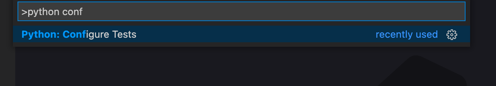
Select pytest from the dropdown.
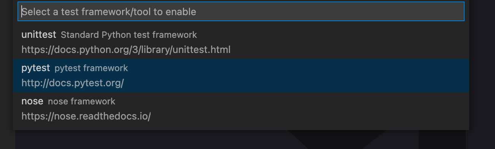
Select the tests directory from the dropdown.
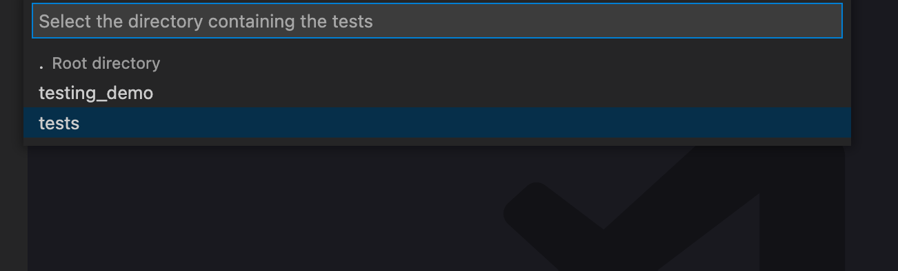
Part 6.2: Running tests¶
Step 2: Review list of tests¶
You will see the TESTING sidebar panel, where your tests will be listed grouped by directory and file.
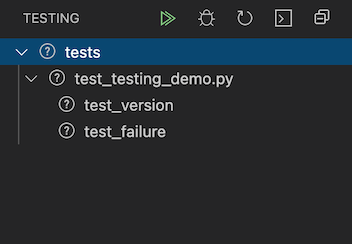
Step 3: Run tests¶
You can run all tests by selecting Python: Run All Tests from the Command Palette
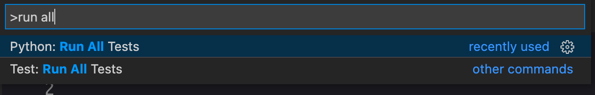
Or clicking the play icon at the top of the TESTING sidebar.
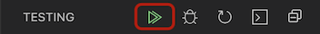
Once your tests have run the failing and passing tests will be marked accordingly.
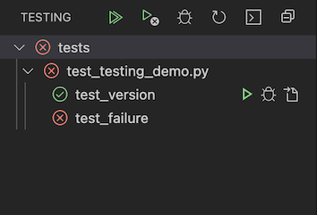
Step 4: View test output¶
Details about any test failures as well as any other pytest output can be seen in the Python Test Log which you can access by selecting Python: Show Test Output from the Command Palette:
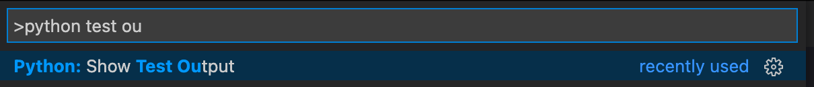
Or by clicking the icon at the top of the TESTING sidebar:
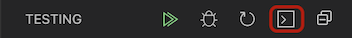
Or by clicking the OUTPUT tab on the panel then selecting Python Test Log from the dropdown.

Part 6.3: Changing tests¶
If you make changes to your tests, you may need to nudge VS Code so that they are reflected.
You can run Python: Discover Tests from the Command Palette:
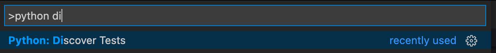
Or by clicking the icon at the top of the TESTING sidebar:
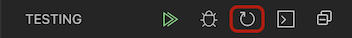